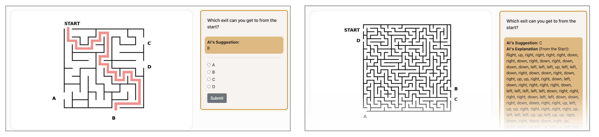

7 When AI Breaks: Dependence and Disruption
Introduction
AI is an impressive technological advancement that can aid in the progression of society. However, it is the responsibility of humans to manage and verify results generated by AI tools to combat overreliance and model drift. One purpose of AI is to help solve a problem. Today, AI can be found in virtually all industries, including healthcare, finance, and media; it can be used for simple tasks, such as setting reminders, or undertake more complicated responsibilities, like identifying fraudulent bank transactions. At the current state of AI, the best performing results arise when AI and humans work as a unit rather than individually. Humans and AI are both limited in their capabilities, thus collaborating to complete a task may ultimately result in a more ideal and efficient solution. Yet there are many factors that impact the way that humans interact with and depend on AI, leading to suboptimal performance.
Definitions
- Overreliance: Overreliance is defined as accepting false information provided by AI as fact (Miller 2023). This can occur due to a variety of factors, including knowledge of the task to be performed, complexity of the work, and familiarity with the decision models behind the AI tool (Passi and Vorvoreanu, n.d.).
- Drift: Drift is a decrease in the number of accurate results produced by an AI model in one area due to the implementation of enhancements or fixes to other areas of the model.
- Dependence: Dependence from the perspective of the human-AI relationship, is when humans rely on AI to autonomously complete a task.
Theories and Consequences
Overreliance has a direct correlation to the complexity of the task to be performed and the ability of the user to perform such task without the help of AI. Humans often take AI generated results without questioning how such information was derived, which can be problematic; AI is not a foolproof solution. Theories suggest that overreliance can be combated by having AI generate an explanation of its finding along with the actual result. The logic behind these hypotheses is that the appearance of an explanation will caution users to validate the results as well as provide supporting evidence for how the output was generated. However, this conclusion is only partially true. Task complexity plays a significant role in whether or not the explanation aids in the users’ decision to affirm the output. A study performed by students and faculty at Stanford University and the University of Washington found a correlation between the complexity of the task and explanation of the AI – when a task is difficult, but the explanation is simple, overreliance decreases (Miller 2023). The study gave participants a maze and tasked them with finding the exit. Individuals could select from a range helpful AI generated tips, from detailed, turn by turn, written instructions to a simple image of the ideal path.
Below are the example maze solutions. Which one would you choose?

(Vasconcelos et al. 2023)
Within both images above, the AI tool proposed a solution along with its reasoning, however, the written directions are more complicated to follow than the simple exit path drawing. The study concluded that the type of explanation is just as significant as the solution itself (Miller 2023). The explanation must be simpler than the task to be effective.
The consequences of model drift can have a significant effect on operations. It can be argued that AI cannot be fully autonomous at its current state. Human intervention is needed to verify the accuracy of results and retrain models to fit the needs of the changing economic and social environments (3). Business requirements change and social norms evolve beyond what AI is capable of adjusting to without human input. One example of AI drift is ChatGPT’s decrease in accuracy in identifying prime numbers. New features were added to the model, thus resulting in this lag in performance (Vasconcelos et al. 2023). Due to the complexity of the AI models, development teams may have difficulty in identifying how to mitigate this drift and revert to prior performance standards.
The introduction of AI has added significant value to society. It has been used to complete mundane tasks, ultimately giving humans more time to do other functions. As technology advances, societal reliance on these AI systems will increase. Dependence on AI leads to the idea of “use it or lose it” (2016). Humans may lose the ability to think for themselves or perform general chores that have been offloaded to AI. The continuous “replacement of human effort, physical, mental, and face-to-face social, with technology… is the erosion of human skill, engagement, attention, patience, persistence, and motivation, making it ever easier for artificial intelligence to replace human intelligence downstream, and not necessarily for our better” (2016). Humans must be aware of the impacts of AI in everyday life.
AI Failures
The use cases from AI are infinite. From improving healthcare delivery through early diagnosis and treatment to assisting in job performance, AI has the potential to benefit our way of life and culture. However, AI is not without faults; dependence on AI may lead to errors or may not even add any value. AI is only as powerful as its dataset and the development team. It is the responsibility of the user to verify the accuracy of the output until AI can be proven to produce only factual results. Below are examples of AI failures:
- During the height of the COVID-19 pandemic, AI models were being developed to assist medical professionals in identifying patients with the disease. The algorithms were developed based on inaccurate datasets produced by doctors who were unfamiliar with the disease. Furthermore, the development teams neglected key factors when training the model and cleaning the data, such as not removing duplicates and not inputting parameters to categorize patient sickness levels (Heaven 2021). Due to these factors, the COVID-19 AI models were deemed ineffective and useless in identifying the disease.
- Amazon invested in an AI tool to rank job applicants to assist the Human Resources department in hiring qualified candidates. The model was trained on data from previous applicants, which happened to be primarily male. Due to the male dominance among the dataset, the model learned to favor male applicants by rejecting resumes that had female undertones (Dastin 2018). Qualified female applicants were dismissed from the running and Amazon nixed further development of the tool.
- A Manhattan lawyer used ChatGPT to find supporting evidence for his case. He prompted the AI to provide a list of similar cases to the one he was working on. The platform was able to identify numerous cases that the lawyer added as support in his brief. The court was unable to verify any of these cases listed since all the cases from ChatGPT were fake and the lawyer neglected his due diligence, ultimately leading to the lawyer’s reputation being questioned and being tried (Weiser 2023). ChatGPT modifies and regurgitates information from the abundance of Internet content, resulting in text that it thinks should be put together. It is an impressive tool that has many use cases; however, its limitations must be realized.
Call to Action
- Verify Output: You must be aware that not all AI generated results are correct; it is your responsibility to validate outputs.
- Supply Explanations: AI should provide explanations for how it arrived at its results to help users better understand its reasoning and you must also read the explanations.
- Keep Up: It can be easy to allow AI to do simple tasks that you do not want to do; however, you must keep up with how the tasks are done in order to not lose the ability to perform them on your own.